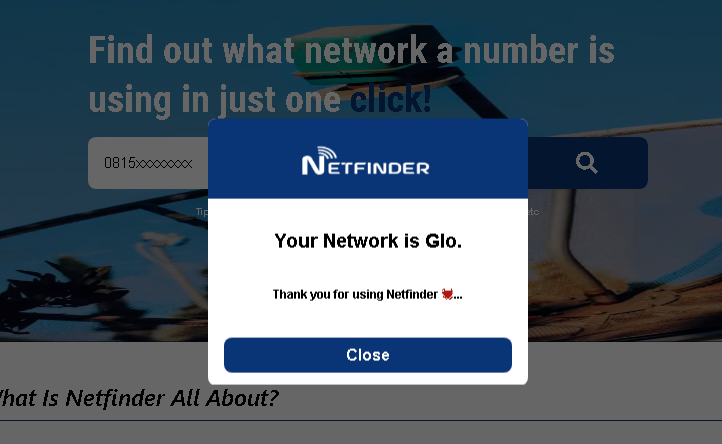
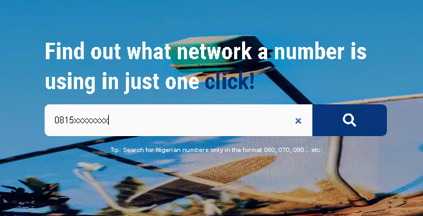

What Is Netfinder All About?
Ever since the emergence of Code Division Multiple Access (CDMA) which is already extinct in Nigeria, the Global System for Mobile Communications (GSM) and even Long Term Evolution (LTE) which came out recently. Communication has become seamless and very affordable overtime.
This simplicity in Communication has brought several network providers into Nigeria with a great competition. One problem with these network providers is that you can't easily tell them apart just by looking at the numbers because they are so similar
This has led people to often ask "What network are you using?" or "The unknown number that just called me is what network sef?" or even frequent questions like "Oooo! Glo just gave me free credit to call only glo customers and I don't know who's using glo on my contact list..." and many more!
If you're on these lists of people, worry no more I have the perfect solution for you... NETFINDER!!
Netfinder is a website birthed out of my first hand experience of those problems listed above, I thought of a way to stop all these questions and came up with a simple and reliable solution.
All you have to do are listed in just 2 simple steps below... Unbelievable right?😲
How To Use Netfinder
- Enter your valid numbers
Ps: You can only search for Nigerian Numbers in the format 080, 081, 090 etc - And hit the search button right beside it or enter on your keyboard... and you'll see a pop up message telling you the network provider of the number you typed in.
Shikena (easy as abc!)


How does Netfinder work?
All network providers have a prefixed set of numbers for their customers which is the first 4 numbers of your total number which can be used to identify the network.
THis prefix is what Netfinder's searchbox analyses and displays the correspondinhg result. Cool right?😏
The prefixes are listed below with their respective networks...
- MTN NG- 0803..., 0703..., 0903..., 0806..., 0706..., 0813..., 0810..., 0814..., 0816..
- GLO NG- 0805..., 0705..., 0905..., 0807..., 0815..., 0811..., 0905...,
- 9MOBILE NG- 0809..., 0909..., 0817..., 0818...
- AIRTEL NG- 0802..., 0902..., 0701..., 0808..., 0708..., 0812...
There you have the 4 main network providers in Nigeria in no particular order I would have included CDMA providers like starcomms, visafone, multilinks etc. but sadly, they are no longer in use especially in Nigeria
Is Netfinder Safe To Use?
I'm sure some of you are wondering "Is my number safe or can it be hacked"
Well to answer this I'll like to tell you that the the data you input are processed in real time and immediately discarded, so they are not stored anywhere, but if you still find it uncomfortable to use or feel your number is too important, you can use it at your discretion, as I won't be held responsible for any leak of data
Consider that my terms and conditions 😏
This website is just the dream of a small boy like me to solve a major but neglected issue in the country 😔...
Who Is this Small Boy Behind Netfinder?
Heyy There!
My name is Emmanuel Ajayi popularly known as Tomiwa. I'm a front-end web developer, graphics designer with a multitalented personality (Not your ordinary guyy.)
I'll like to say I'm obsessed with building mobile first responsive websites and using code to solve little problems around me.
(ps: little is relative)
Sadly I don't have a personal portfolio website yet... I'm still gathering projects together but you can check out my social pages and GitHub page below to know more about me or just click the whatsapp icon and let us chat.